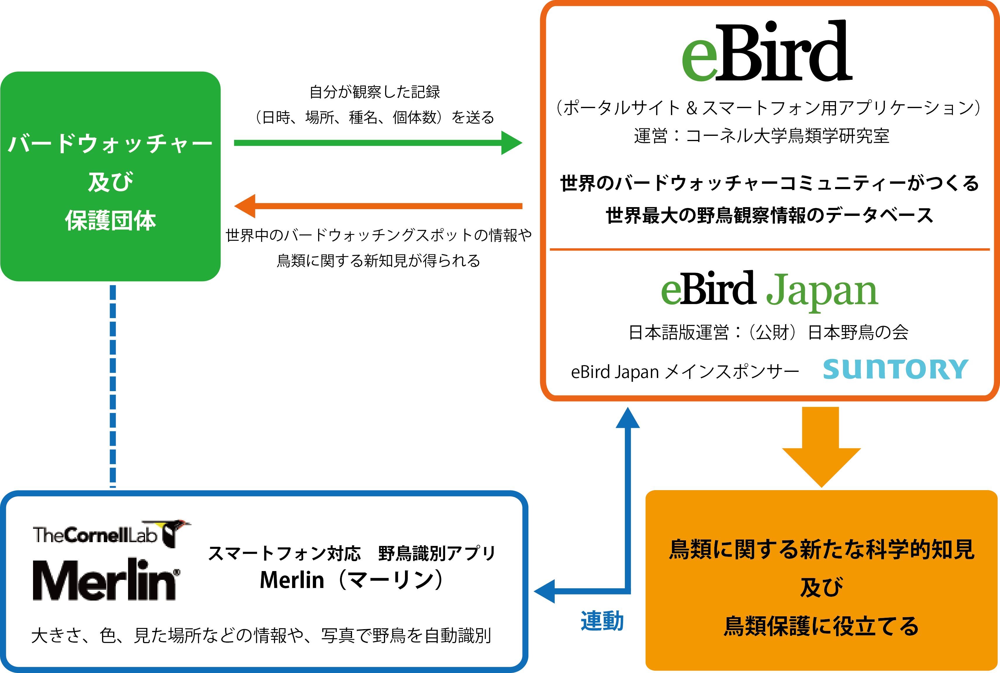

eBird と Merlin

私は特にバードウォッチャーというわけではないが，昨年末に望遠専用のコンパクトデジカメを買って以来，その辺にいる野鳥を撮って遊んでたりする。
私の場合，生き物の外見を「見分ける」のが不得手で人間の顔もなかなか覚えられないのだが，せっかく写真に撮ったんだし，それがどんな鳥なのか知りたいじゃない？ 今までは Google Lens とかで調べてたんだけど， Merlin というスマホアプリがあるらしい。
このアプリの面白いところは，単に野鳥の種類が調べられるだけでなく， eBird と連動している点のようだ。

Merlin で野鳥を調べるには，本体とは別に「バードパック」というのが必要。 最初に起動した際にリージョンに合ったバードパックを勧めてくるので，通常はそのままダウンロード&インストールすればよい。 のだが，データ量が多く，けっこう時間がかかった。
実際に撮った写真で試してみよう。 たとえば，昨日撮った

という写真を調べてみる。
最初のメニューに「写真で識別する」という項目があるので，これを使う。
こんな感じで拡大して「次へ」
こんな感じに場所（地図で指定できる）と見つけた日付を入れて「識別」する。 すると
こんな感じに候補が表示される。 これで件の鳥がカルガモだと分かる。
この状態で「これが私の見つけた鳥です！」ボタンを押すと登録されるのだが，登録するためには Cornell Lab のアカウントが必要である。
アカウントの作成は Web ブラウザに移動して行う。 住所とか入力させられるので（必須ではないみたいだが），そういうのが嫌な方は登録を諦めるしかない。 なお Web でサインインして後からアカウント設定変更も可能で，削除も簡単にできる。
アカウントを作成して登録すれば自身のライフリストに記録が残る。 ただし識別に使った写真は登録されないみたい。 あくまで日付と場所と目撃した鳥の種類（推定）が非公開の個人記録として登録されるだけのようだ（学術研究にも使われない）。 Merlin で行った識別を eBird 側に登録するには eBird Mobile というアプリを入れて連携させる必要があるらしい。 eBird メインで活動するなら，もう立派にバードウォッチャーかな。
んー。 最初に言ったように私はバードウォッチャーではないので，今のところ Merlin で遊ぶくらいでちょうどいいだろう。
ブックマーク
参考

- Canon コンパクトデジタルカメラ PowerShot ZOOM 写真と動画が撮れる望遠鏡 PSZOOM
- キヤノン (Release 2020-12-10)
- エレクトロニクス
- B08L4WKDZ7 (ASIN), 4549292179675 (EAN)
- 評価
望遠鏡型コンパクトデジカメ。メモリと充電器（要 Power Delivery）は別に用意する必要がある。使い勝手はまぁまぁ。

{kind=link}
{kind=link}
{kind=link}
{kind=link}
{kind=link}